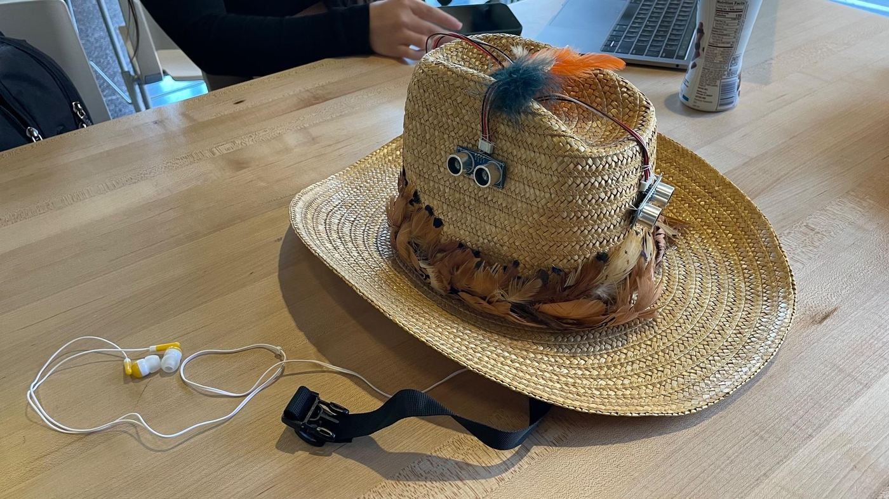
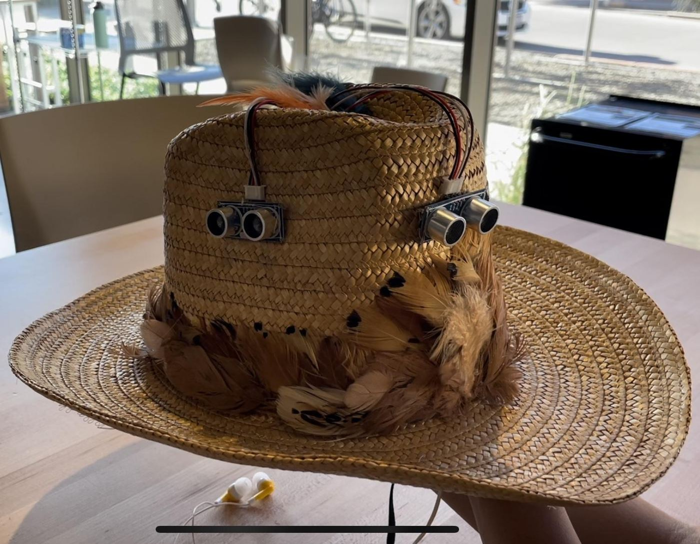
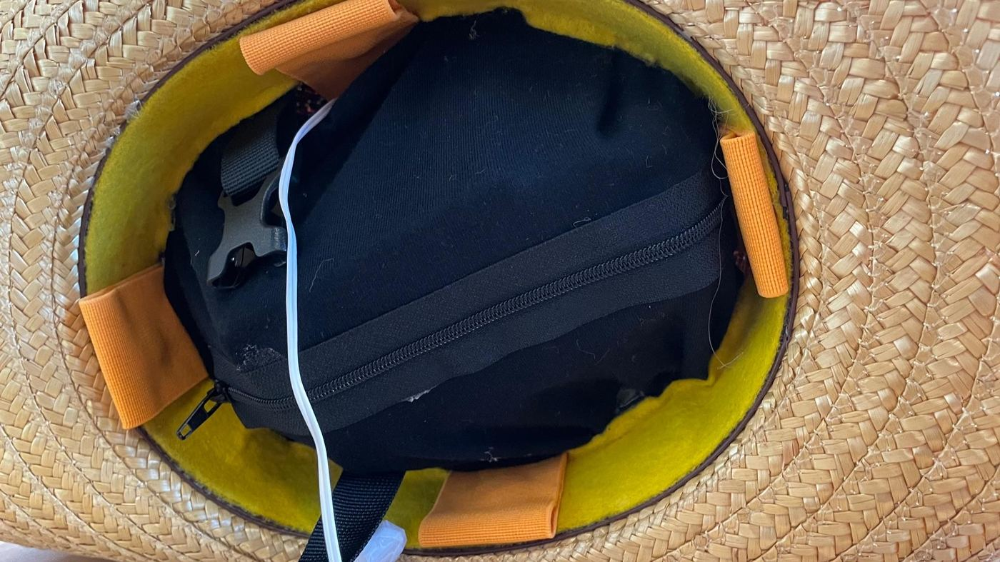
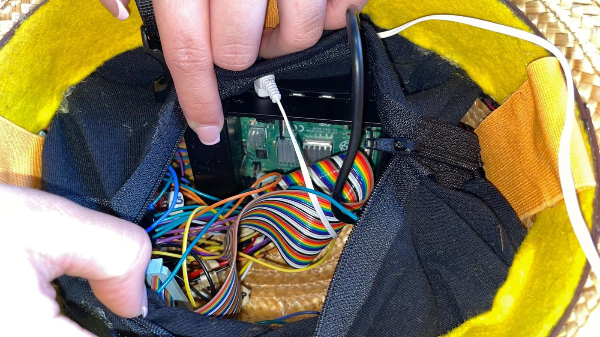
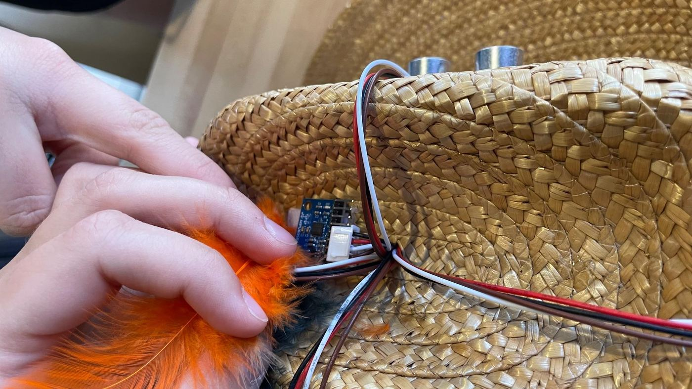

Problem
Obstacles coming from the side or from behind are easy to miss without sight. The team wanted to warn users in all four directions early enough to react.
What I did
Built the vibration motor control and designed how urgency is felt: where the buzz is tells you the direction, how many pulses tells you how urgent it is, and voice is saved for the most urgent case.
Outcome
10 students tested the first version: 9 of 10 rated the alerts clear, but telling which side buzzed was the weak spot, in my area. The team rebuilt the hat around that feedback.
Awareness in every direction, without looking
The 360° Hat helps users avoid both stationary and moving obstacles. It warns them about an impending collision based on two things: how close an object is and how fast it is approaching. The goal was to give users enough time to react and avoid contact, injuries and head-on collisions.
It was designed for blind and low-vision users, but anyone who wants more awareness of their surroundings without relying only on their eyes could use it.
Four sensors in, four motors and a voice out
Inputs
- 4 ultrasonic sensors facing front, back, left and right measure distance. Comparing two readings in a row gives the speed of an approaching object.
- 1 gyroscope (MPU-6050) detects head turns and body turns, so the hat doesn't mistake the user's own movement for an approaching object.
Outputs
- 4 vibration motors, one on each side of the head, are the main alerts.
- Headphones play a short spoken warning that names the direction, for the most dangerous cases only.
The sensors take turns, one at a time with a 0.25-second pause between each, so their pings don't interfere with each other. A Raspberry Pi runs one Python loop that reads each side, works out a danger level and triggers that side's feedback.
Telling someone where and how urgent, without sight
My part was the haptic feedback: the code that drives the vibration motors and the rules for what each alert should feel like. The question I was designing for: how do you tell someone where an obstacle is and how urgent it is, without overwhelming them?
Direction
The buzz points to the obstacle
Each sensor is paired with the motor on the same side of the head. A buzz on the left means something on the left, with nothing to decode.
Urgency
Count, not strength
Danger levels 1, 2 and 3 become 1, 2 and 3 pulses. A number of pulses is easier to tell apart through a hat than small differences in vibration strength.
Voice
Saved for the worst case
Spoken alerts like “Behind you” and “On your left” only play at level 3. Kept rare, they stay meaningful instead of turning into background noise.
The rules
| Level | Speed rule | Distance-only fallback | Feedback |
|---|---|---|---|
| 1 | Slow approach (5–73 cm/s) within 200 cm | 400–800 cm away | 1 pulse |
| 2 | Medium approach (73–129 cm/s) between 200 and 400 cm | 200–400 cm away | 2 pulses |
| 3 | Fast approach (over 129 cm/s) | Closer than 200 cm | 3 pulses + spoken alert |
Speed thresholds came from an in-class experiment. Alerts pause while the gyroscope reports a head turn or body turn.
def VMbeep(vm, x):
while x > 0:
vmOn(vm) # motor on
time.sleep(.25)
vmOff(vm) # motor off
time.sleep(.25)
x -= 1Ten students wore it and rated it
The first version put the electronics between two hats: an outer hat for the sensors and a second hat inside it. Ten fellow students wore it, tried it out, and rated it in a survey.
rated the alerts clear and understandable (6 or 7 out of 7)
rated the sensors accurate (6 or 7 out of 7)
felt warned ahead of time (4 or 5 out of 5)
Direction was the hardest part to feel
The survey asked how well testers could tell which side the vibration came from. This is the part of the hat I designed, and it had the widest spread of any question.
“It was difficult to determine which vibrators were going off.”
“Due to double hat I was not able to feel the buzzer properly.”
“Stronger vibrations on the side it is sensing.”
What I took from it
- Counting pulses only works if you can feel them. Using pulse count for urgency held up, but the vibration had to reach the head clearly first.
- The hardware muffled the haptics. The second hat sat between the motors and the head and absorbed the buzz. Feedback design and physical design can't be separated.
- Voice worked. Testers called the audio clear and easy to follow.
Rebuilding the hat around the feedback
The team turned the survey into a plan and rebuilt the hat for the final version.
| What testers said | What we changed |
|---|---|
| Hard to tell which side was buzzing; the double hat muffled it | Removed the second hat and put the vibration motors in fabric pocket straps against the head |
| “Instead of a second hat, using cushioning would be more effective” | Sewed a cloth lining inside the hat to hold the Raspberry Pi and breadboard |
| Comfortable, but “quite loose” | Added an adjustable chin strap |
| Visible wires; “very wearable, but not aesthetic” | Covered visible wires with feathers |
| “Volume should be loud” | Kept the volume as it was, on purpose: users who rely heavily on hearing could be startled or overwhelmed by louder alerts |
The final hat
In the final version, the electronics sit in a black cloth lining so the Raspberry Pi and wires never touch the wearer's hair or scalp. The vibration motors sit in orange fabric pockets against the inner lining, invisible from outside. A zipper hides the headphones when they aren't needed, and the strap keeps the hat stable on any head size.
The feathers aren't just decoration. They also give the hat a texture that a blind user can recognize by touch, so it's easy to tell apart from other hats.





Team photos.
Team photos of the final hat.
How the final hat behaves
| Situation | What the hat does |
|---|---|
| Nothing nearby | Stays silent: no vibration, no voice |
| User slowly walks toward a wall | 1 pulse on the side facing the wall |
| Object approaches at medium speed | 2 pulses on that side |
| Object approaches fast | 3 pulses on that side, then the spoken warning for that direction |
| User turns their head | Gyroscope pauses alerts so the turn isn't read as an approaching object |
What I'd do differently
| Limit | Why it matters | Next time |
|---|---|---|
| My pulse function blocks the program.My code | VMbeep uses sleep, so a level 3 alert pauses everything for 1.5 s while the other three sides go unchecked. | Run haptics on their own thread or with non-blocking timers. |
| Sensors are read one at a time. | With a 0.25 s pause per side, one full sweep takes over a second. A fast object can move more than a meter between readings, and one tester noticed the sensing “lags a bit.” | Read sensors in parallel and alert on the newest reading. |
| Direction still needs proof.My area | The pocket straps were meant to fix side detection, but a rating is a weak measure of it. | Ask people to name the side that buzzed and count how often they get it right. Try stronger motors with adjustable intensity. |
| Gyroscope thresholds are rough. | The cutoffs came from trial and error, so turn detection can mute real alerts. | Calibrate per user and smooth readings over time. |
| Testing was with other students only. | The people the hat is for weren't part of testing, and the survey didn't check whether people could tell 2 pulses from 3 while walking. | Test with blind and low-vision users and an orientation and mobility specialist. |
What I learned
Feedback design is UX, even without a screen.
Choosing where a vibration happens and how many times it repeats is an interface decision, just like choosing a button label.
Silence is part of the design.
Keeping the voice for the most dangerous moments is what makes it worth listening to.
Test on the real hardware.
My vibration patterns made sense on paper, but testers struggled to feel them through two layers of hat. The physical build is part of the feedback design.
Timing is a shared resource.
The 1.5-second pattern I designed competed with the sensing loop for time. Feedback and sensing have to be designed together.